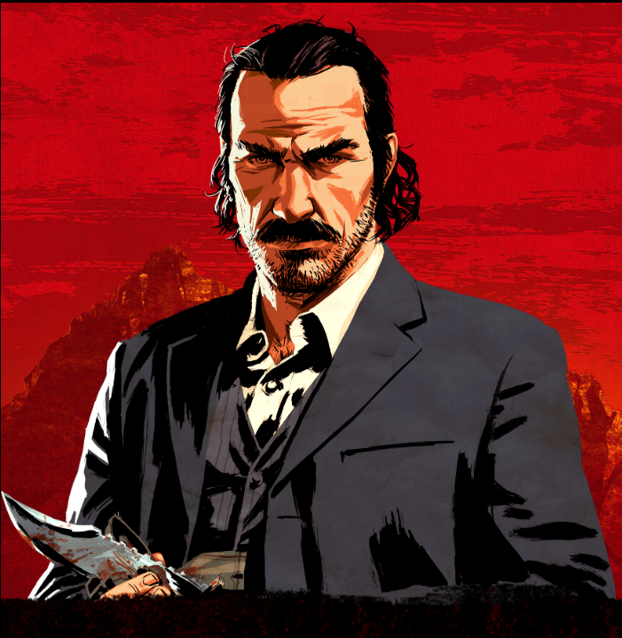
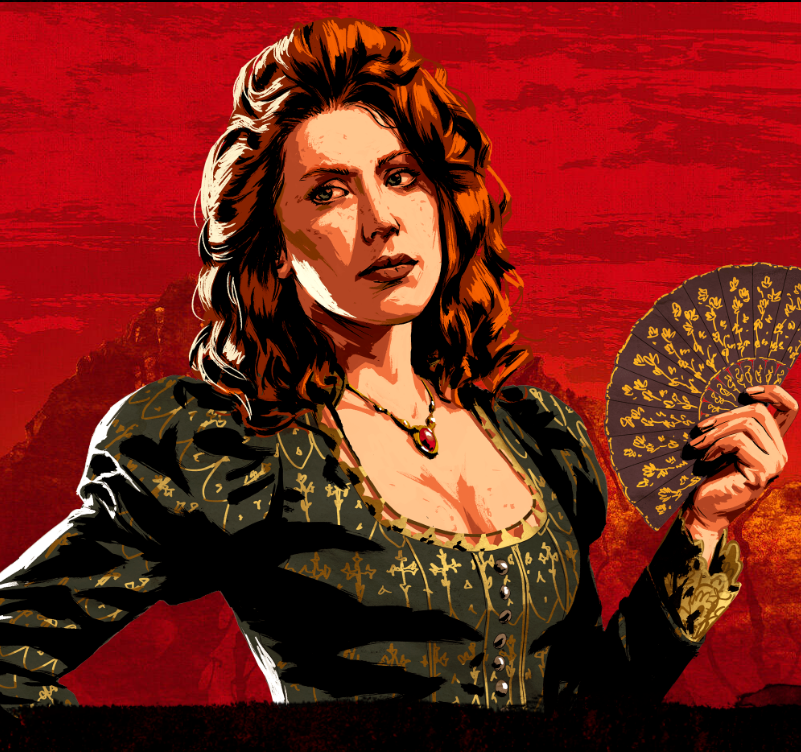
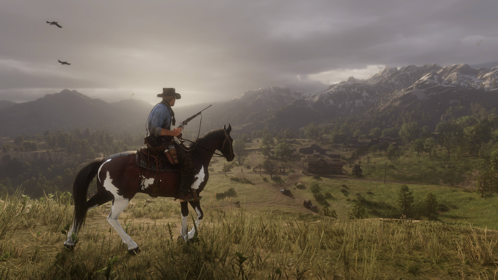
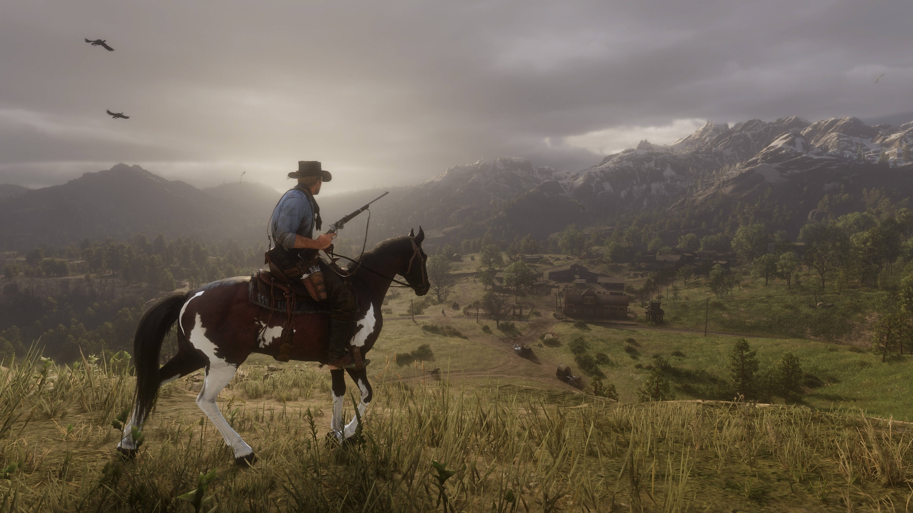
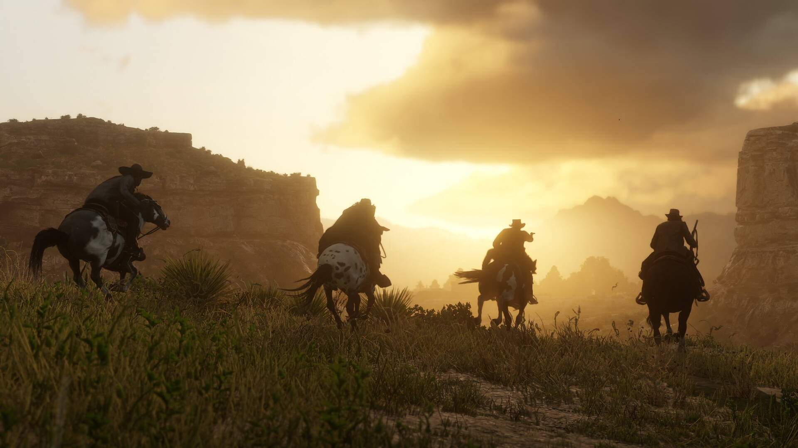
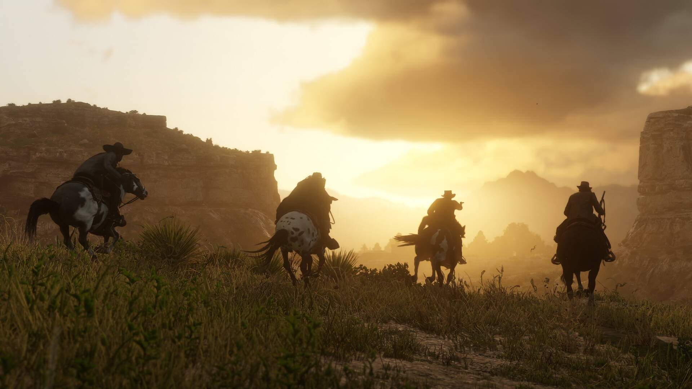
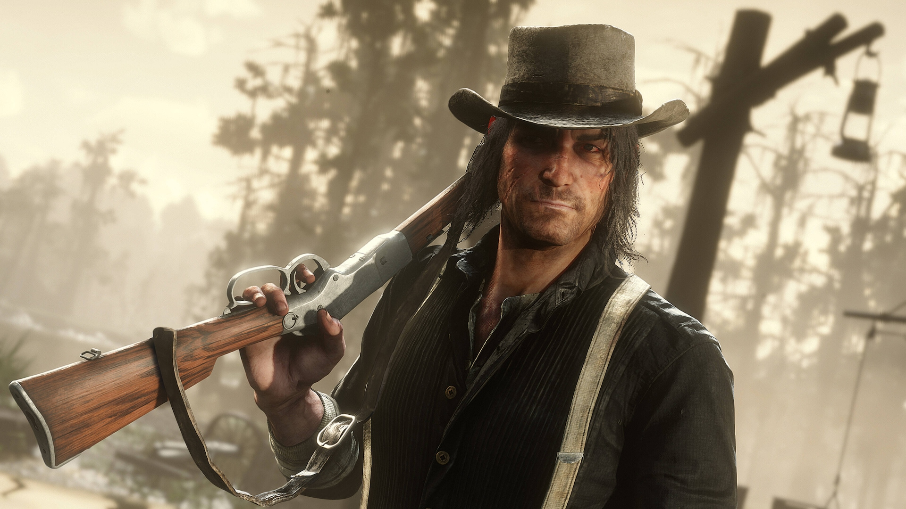
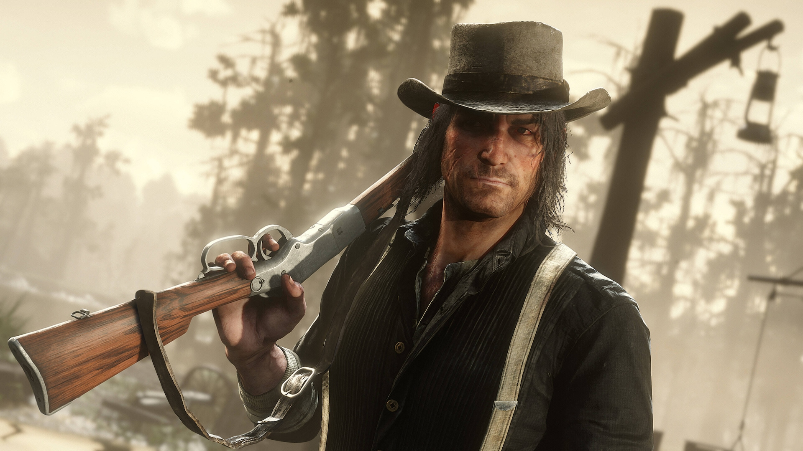

Dutch Van Der Linde
"Eles estão nos perseguindo com força, porque representamos tudo o que eles temem."
Saiba Mais
"Líder de uma gangue considerável de foras da lei e desajustados. Idealista, anárquico, carismático, culto, bem vivido, mas possivelmente começando a se desintegrar sob as pressões do mundo moderno invasor.",
Arthur Morgan
"Somos ladrões em um mundo que não nos quer mais."
Saiba Mais
"O executor mais confiável e capaz de Dutch desde criança, a vida de fora da lei é tudo o que Arthur já conheceu. Astuto, tranquilo e implacável, mas com seu próprio senso de honra. Um homem que cumpre o que promete.",
JohnMarston
"Acho que tudo o que me resta agora são dúvidas. Dúvidas e cicatrizes."
Saiba Mais
"Órfão de rua, acolhido por Dutch aos doze anos, John sempre teve que se virar com sua inteligência. Astutos, destemidos e obstinados, ele e Arthur são os protegidos mais orgulhosos de Dutch.",
Hosea Matthews
"Gostaria de ter adquirido sabedoria por um preço menor.""
Saiba Mais
"Mestre da trapaça, cavalheiro e ladrão, Hosea é o melhor amigo e braço direito de Dutch há mais de vinte anos. Inteligente e perspicaz, ele consegue entrar ou sair de praticamente qualquer coisa com a ajuda da sua fala.",
Leopold Strauss
"O mundo lá fora é horrível, e ele está nos alcançando..."
Saiba Mais
"Natural da Áustria, Herr Strauss é o responsável por manter os livros contábeis da quadrilha e administrar sua operação de empréstimo de dinheiro. Um homem sério, um tanto evasivo e inexpressivo, ele possui todas as qualidades necessárias para um agiota.",
Micah Bell
"Acredito que há vencedores e perdedores... e nada mais."
Saiba Mais
"Um criminoso e assassino profissional. Selvagem e imprevisível, mas que vive pela ação."
Charles Smith
"Pelo tanto inferno que causamos, devemos retribuir."
Saiba Mais
"Recruta relativamente recente na gangue, Charles é quieto e reservado, mas extremamente competente em tudo o que faz e praticamente imbatível em combate. Um homem decente e honesto que também é mortal.",
Sadie Adler
"Ninguém nunca mais vai tirar nada de mim."
Saiba Mais
"Uma viúva determinada a se vingar daqueles que mataram seu marido. Implacável e sem medo de nada nem de ninguém. A mulher errada para se contrariar, mas muito leal àqueles que ama.",
Uncle
"As pessoas me chamam de preguiçoso. Eu não sou preguiçoso. Só não gosto de trabalhar. Há uma diferença."
Saiba Mais
"Um cara parasita e divertido, o Tio está sempre por perto quando o uísque está aberto e nunca quando há trabalho a ser feito. Se ele não fosse tão divertido, Dutch já o teria dispensado anos atrás."
Abigail Roberts
"Se eles fizerem um único arranhão nele, eu juro que eu mesmo trarei o fogo do inferno sobre eles."
Saiba Mais
"Órfã, que cresceu lutando para sobreviver em bares e bordéis no Oeste, Abigail é uma mulher forte e direta que já viu muita coisa na vida e sabe o que é preciso para sobreviver contra todas as probabilidades.",
Bill Williamson
"Não tente nada estúpido e não faremos nada cruel."
Saiba Mais
"Um ex-soldado dispensado do exército, possivelmente desonrosamente. Impulsivo, ele tende a agir primeiro e pensar depois, mas é durão, dedicado e sempre pronto para lutar.",
JackMarston
"Você pegou os bandidos?"
Saiba Mais
"O jovem Jack cresceu com a gangue, embora todos tenham feito o possível para protegê-lo dos elementos mais nefastos, especialmente sua mãe, Abigail. Ele ama tudo relacionado à natureza e à vida ao ar livre, e é cuidadosamente vigiado por seus muitos tios e tias.",
Javier Escuella
"Se tivermos que lutar, lutaremos. Se tivermos que fugir, fugiremos. Se tivermos que morrer, morreremos, mas... Permaneceremos livres."
Saiba Mais
"A notorious bounty hunter and Mexican revolutionary. Javier immediately had a strong connection to Dutch’s ideals. Very committed, passionate and loyal.",,
Josiah Trelawny
"Como o romance pode ser bobo? É tudo o que temos."
Saiba Mais
"Um mágico extravagante, vigarista e trapaceiro, Trelawny é um homem muito difícil de prender, mas ele sempre consegue trazer boas pistas.",
Karen Jones
"Aplicando golpes, roubando bancos, enganando os ricos e coisas horríveis."
Saiba Mais
"Uma golpista consumada e mulher de gatilho que consegue beber de praticamente qualquer um. Ousada e divertida, ela ama a vida de fora da lei e não a trocaria por outra.",
Lenny Summers
"Viver livre aqui fora, assim... Eu não gostaria de outra maneira."
Saiba Mais
"O jovem Lenny está foragido desde os 15 anos, após matar os homens que assassinaram seu pai. Inteligente, educado, competente e ambicioso, ele está sempre pronto para fazer a sua parte.",
Mary-Beth Gaskill
"Senhores, acho que tenho algo bom."
Saiba Mais
"Uma jovem gentil e bem-humorada, o que a torna a criminosa perfeita. Quando as pessoas percebem que foram enganadas, Mary-Beth já está voltando para casa com o dinheiro.",
Molly O Shea">
>Molly O Shea
"Você está jogando um jogo perigoso."
Saiba Mais
"Uma garota de Dublin e objeto de afeição de Dutch, pelo menos por enquanto, Molly está nervosa demais para uma vida de fuga e tudo está começando a pesar sobre ela.",
Pearson
"As pessoas estão felizes e bem alimentadas. Acho que talvez fiquemos bem."
Saiba Mais
"Açougueiro e cozinheiro do acampamento, Pearson serviu na Marinha por um curto período, sobre o qual gosta de falar longamente. Um degenerado barulhento e alegre que está um tanto em negação sobre a reviravolta que sua vida tomou.",
Reverend Swanson
"Eu tive um sofrimento real e perdi tudo, minha vocação, minha fé, minha família"
Saiba Mais
"Ex-clérigo, agora perdido na devassidão, Swanson está muito distante dos padrões que um dia estabeleceu. Se não tivesse salvado a vida de Dutch no passado, é improvável que a gangue o tivesse mantido por tanto tempo.",
Sean MacGuire
"Deixe comigo. Eu consigo convencer um cachorro a desistir de um açougue."
Saiba Mais
"Um jovem ladrão e assaltante irlandês arrogante que vem de uma longa linhagem de criminosos e dissidentes políticos. Ele sempre quer participar da ação e acredita em si mesmo... talvez até demais.",
Susan Grimshaw
"Juro que metade de vocês apodreceria na própria sujeira se ninguém os controlasse."
Saiba Mais
Chefe indiscutível e árbitra da justiça no acampamento, tudo teria desmoronado anos atrás sem Susan no comando. Tenaz e determinada, ela não tolera bobagens.

Tilly Jackson
"A maioria de nós cresceu com fome, com medo e sozinha, de uma forma ou de outra."
Saiba Mais
"Fora da lei desde os 12 anos, Tilly se juntou a outra gangue antes de se juntar a Dutch. Inteligente, resiliente e confiável, ela sabe se virar e não tem medo de falar o que pensa.",


 



 


 
